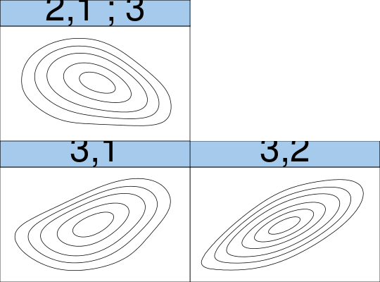
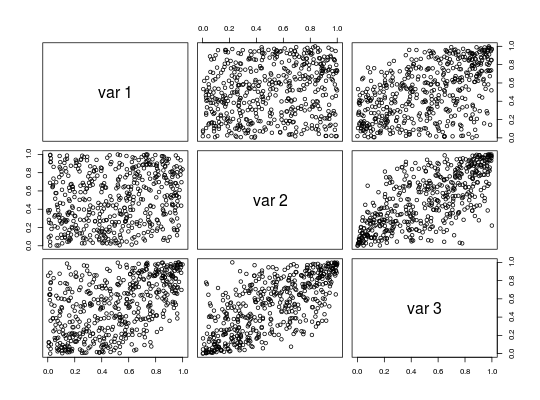

The function estimates a vine copula density using kernel estimators for the pair copulas (based on the kdecopula package).
kdevinecop(data, matrix = NA, method = "TLL2", renorm.iter = 3L, mult = 1, test.level = NA, trunc.level = NA, treecrit = "tau", cores = 1, info = FALSE)
| data | (\(n x d\)) matrix of copula data (have to lie in \([0,1^d]\)). |
|---|---|
| matrix | R-Vine matrix (\(n x d\)) specifying the structure of the vine;
if |
| method | see |
| renorm.iter | see |
| mult | see |
| test.level | significance level for independence test. If you provide a
number in \([0, 1]\), an independence test
( |
| trunc.level | integer; the truncation level. All pair copulas in trees above the truncation level will be set to independence. |
| treecrit | criterion for structure selection; defaults to |
| cores | integer; if |
| info | logical; if |
An object of class kdevinecop. That is, a list containing
lists of the estimted pair copulas in each tree,
the structure matrix of the vine,
additional information about the fit (if info = TRUE).
Nagler, T., Czado, C. (2016) Evading the curse of dimensionality in nonparametric density estimation with simplified vine copulas. Journal of Multivariate Analysis 151, 69-89 (doi:10.1016/j.jmva.2016.07.003)
Nagler, T., Schellhase, C. and Czado, C. (2017) Nonparametric estimation of simplified vine copula models: comparison of methods arXiv:1701.00845
Dissmann, J., Brechmann, E. C., Czado, C., and Kurowicka, D. (2013). Selecting and estimating regular vine copulae and application to financial returns. Computational Statistics & Data Analysis, 59(0):52--69.
dkdevinecop,
kdecop,
BiCopIndTest,
foreach
data(wdbc, package = "kdecopula") # rank-transform to copula data (margins are uniform) u <- VineCopula::pobs(wdbc[, 5:7], ties = "average") fit <- kdevinecop(u) # estimate density dkdevinecop(c(0.1, 0.1, 0.1), fit) # evaluate density estimate#> [1] 3.275352contour(fit) # contour matrix (Gaussian scale)